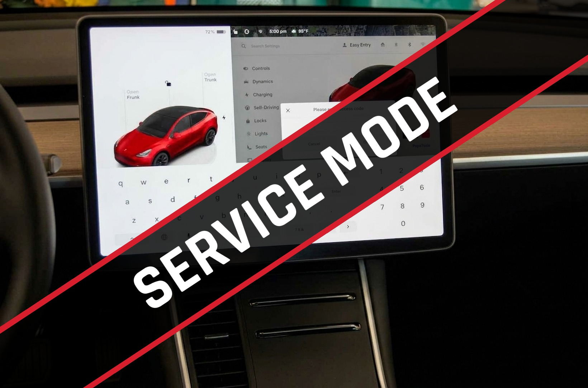
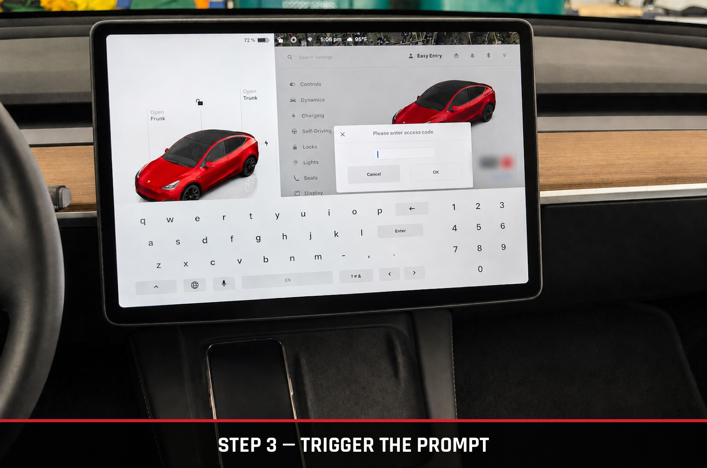
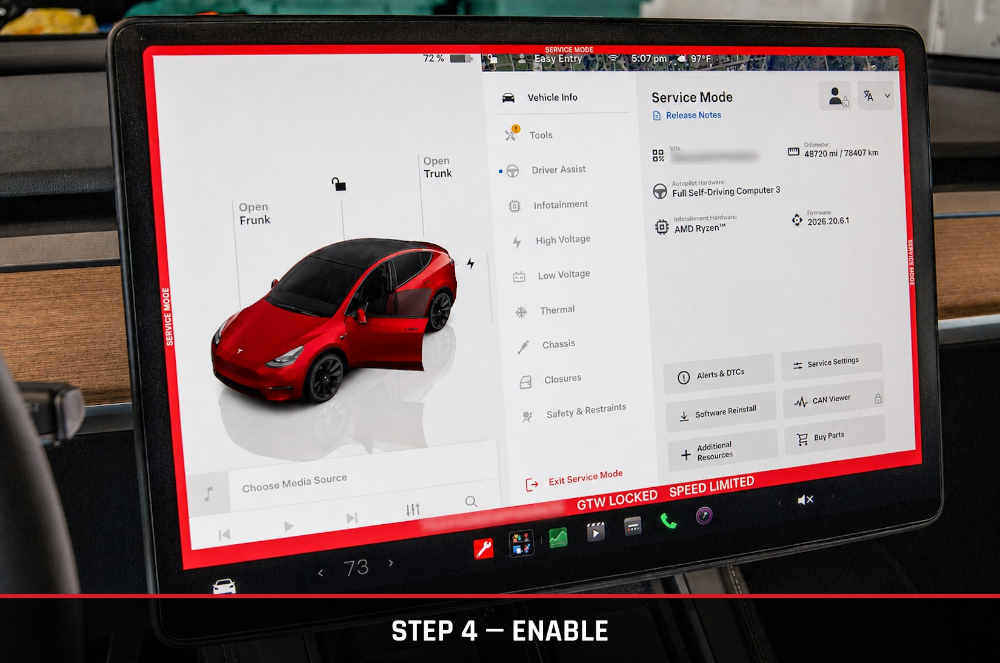
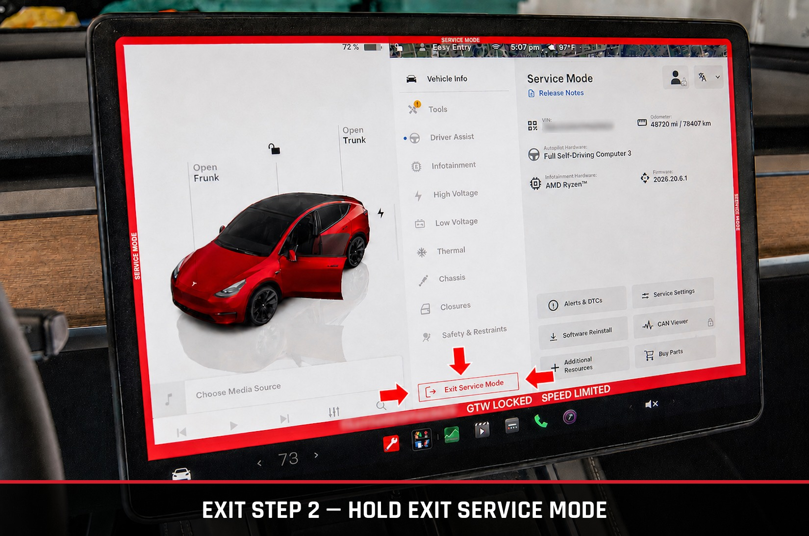

DIY / Maintenance / Service Mode
// Reference
A built-in diagnostic interface hiding behind your touchscreen — how to open it, how to leave it, and what it actually shows you.

Service Mode is a built-in diagnostic interface on the Model Y's own touchscreen — no laptop, cable, or third-party tool required. It's how technicians pull live sensor data and run basic checks, and Tesla leaves it accessible to anyone who knows the sequence. While it's active, a red border frames the entire screen so you always know it's on.
Tap the car icon in the bottom-left of the touchscreen to open the Controls panel.
From the Controls menu, tap into Software.
Press and hold your vehicle's model name (e.g., “Model Y”) for 3–5 seconds until it flashes, then type service into the prompt that appears.

Tap Enable. A red border will frame the screen for as long as Service Mode is active.

With Service Mode active, open the Service Mode menu from the touchscreen.
Tap and hold the Exit Service Mode button (the red door/wrench icon) until the red frame disappears.

All Model Y trims — Standard Range, Long Range, and Performance — across every production year (2020–2026) run on the same unified diagnostic interface, so the categories below apply regardless of your specific configuration.
| System | Consumer-Friendly Data & Tasks | Trims / Years |
|---|---|---|
| Low-Voltage Battery | Check 12V (older builds) or 16V Li-ion battery voltage, status, and system draw metrics. | All (2020–2026) |
| High-Voltage Battery | View basic thermal/cell status, run high-voltage health checks, check energy retention percentage. | All (2020–2026) |
| Thermal / HVAC | Inspect real-time heat pump status, supermanifold valve operation, coolant flow, and temperature sensors. | All (2020–2026) |
| Tires & Brakes | View precise real-time TPMS sensor values and trigger brake maintenance functions (like pad service mode). | All (2020–2026) |
| Alerts & Maintenance | Review active and historical diagnostic service alerts, or clear minor notification flags. | All (2020–2026) |
Service Mode is not formally documented in Tesla's consumer-facing Owner's Manual — the steps and data categories above are based on the interface as it exists on current software as of July 2026. Menu layout and available functions can shift with software updates, so treat anything you see in Service Mode as a live snapshot, not a guarantee.
Service Mode exposes diagnostic and actuation functions — some options can move physical components (such as brake pad service functions) or alter system settings. modMY is not responsible for any damage, injury, or mechanical issues resulting from use of Service Mode, including unintended actuation of vehicle systems. Only view or run functions you specifically understand, and consult a qualified technician for anything beyond basic status checks.